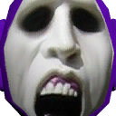
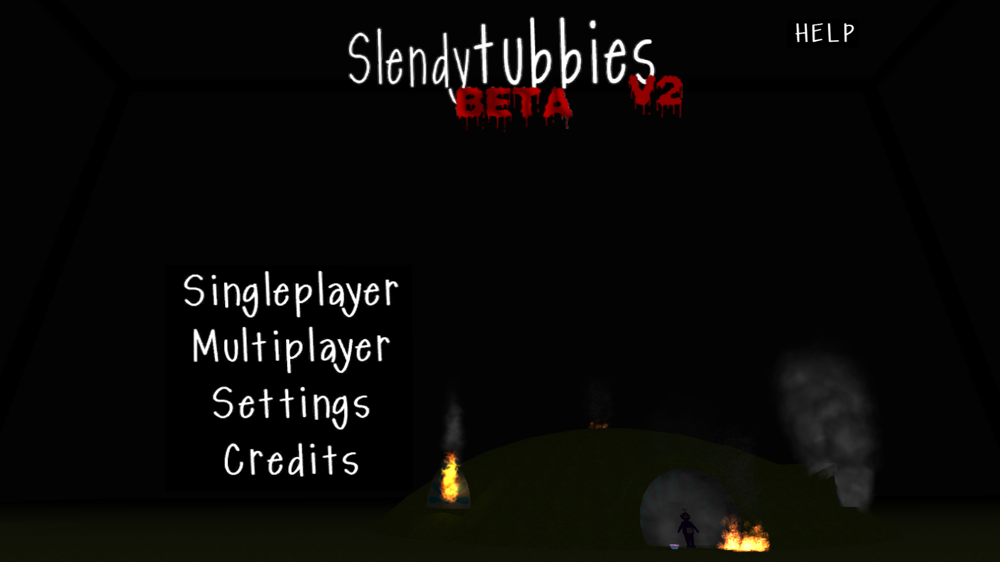

- Developer: ZeoWorks
- Engine: Unity 3.4.2 (Alpha), Unity 3.5.5 (V1), Unity 4.0.0 (V2)
- Platform: PC
- Release: December 12, 2012
- Latest version: V2.0 BETA — “Fix”
- Genre: Survival Horror, Item Collecting, Indie.
- Language: English
- Canon: No
- Next installment: Slendytubbies II


Slendytubbies, also known as Slendytubbies 1 (acronymed to S1, S, ST or ST1) is an online horror game, which is a result of the combination of popular horror game Slender: The Eight Pages and the children's television show Teletubbies. The game features two modes; Singleplayer and Multiplayer. The Mediafire link of the V2 Beta can be found here, and the original version can be found here. The point of the game is to collect ten bowls of Tubby Custard while avoiding Tinky Winky who is the threat of the map.
To this day, Slendytubbies is the most unique installment out of the series: having a interactable environment, three time periods (Dusk wouldn't be reintroduced until a update in Slendytubbies III), different enemy behavior, and more. Interactable environments (such as falling trees) were removed in future instalments.
Plot
This game in fact, had a plot thanks to an old recovered Santikun video titled 'Slendytubbies: The Movie' (Trailer) which was cancelled, where it showed about how Tinky Winky started to act weird after eating a custard and he went one by one killing them, excluding Po who committed suicide. After the incident, two white teletubbies (who are cops) went to investigate it, only to be "in vain" as they are presumably killed by Tinky Winky off screen. Two more cops, referred to as the "Slendytubbies Busters" arrive as the main protagonists of the story, ending the trailer here.
It must be noted that this video and plot is possibly non-canon, as Sean had no input in making it.
Gameplay
The game more or less plays like the original Slender, but in the Teletubbies universe and with ten custards to collect instead of eight pages. Players can choose from a variety of time periods before beginning the game; day, dusk and night. The time periods only change the game visually, and as such, all time periods play identically to each other. The player's task is to collect ten custards while avoiding Tinky Winky, the sole antagonist of the game. Much like the Slender Man, players must avoid looking at Tinky Winky as having visual contact with him for too long will "kill" the player, causing a text pop-up to indicate that the player "has been caught". This game only features one map.
When players enter through any time period, they are first put through a "intermission" sequence where they can begin the game by pressing E at their own leisure. During this intermission period, players can explore a very limited section of the map, blocked off from accessing more beyond the starting area unless if they begin the game.
The game also comes with a multiplayer mode, unlike most Slender games at the time; the multiplayer mode is most credited for kickstarting Slendytubbies' success. However, the game required a VPN to properly play multiplayer, such as Hamachi.
In the multiplayer menu, players can access either the Competitive mode, in which players compete to collect the custards, with their own respective version of Tinky Winky chasing them, and the Versus mode, where the host of the game plays as Tinky Winky. When a player joins the game, a text pop-up will appear at the top-left corner of the players' screen showing that "a helpless victim has joined the game".
The fallen Teletubbies can be found at certain map locations: the lake for Laa-Laa (who gets up momentarily before collapsing face first if the player approaches her), the house for Dipsy, a tree for Po (who is said to have committed suicide in the Trailer). Noo-noo can also be found at the house alongside Dipsy, but unlike the other victims, he is malfunctioning and vacuuming in circles. Several voice trumpets can also be found across the map, with an easter egg trumpet hiding in the mountains playing a meme song.
A customizing option is available when the player opens the in-game menu by pressing “E”. Customization is visible on the lower left of the menu. To customize the player’s character, click on it and paste your skin links to the desired body area. Customizing the character is really useful if playing with more than two people as it allows the players to distinguish one from another.
Alpha
Main article: Slendytubbies Alpha
Trivia
- Every time the player collects a Tubby Custard an audio clip will play.
- BETA V2 Update fixed Tinky Winky not being able to climb / fly up mountains or trees.
- The Fur texture is made with the sponge effect on paint.net.
- This is the only game in the series where you can die by looking at the enemy for too long, similar to the original Slender. Succeeding games and remakes do not stay true to the "Slender" title.
- Somehow, even though this is the first game in the series, it is considered to be non-canon.
- The download for the game has been removed from the Zeoworks website.
- There used to be a malware coded version, back in Early 2013. Unfortunately, Nobody knows if it's archived.
Text by: Slendytubbies Wiki